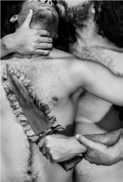
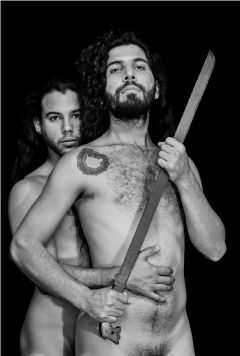
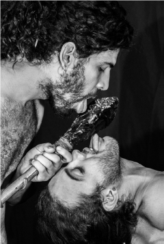
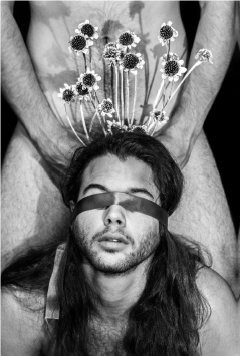
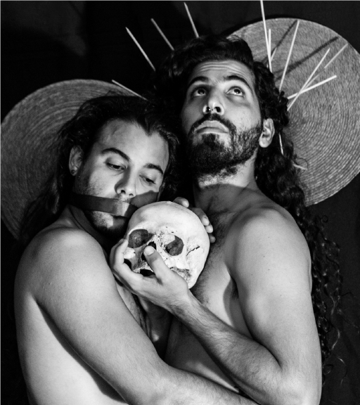

¿Quiénes somos al amar? ¿Nos entrelazamos y nos identificamos en quién amamos? la serie fotográfica “La Dicha” reflexiona sobre la libertad y el amor en contextos herméticos de comunidades latinoamericanas, bajo matices blancos y negros, todo narrado en 18 imágenes.
LA DICHA
2021




Nominación a “Mejor serie fotográfica”, Concurso Nacional de Fotografía “Lente Inquieto”, La Habana, Cuba, 2021.


“EXTRAÑAR AL PRÓJIMO” DE LA SERIE “LA DICHA” Nominación “Mejor Fotografía”. Plataforma Internacional Refocus Awards. Categoría “People”. Mount Pleasant, Michigan, EUA, 2022

Fragmento Ritual
Pieza que explora la tensión entre luz y sombra como metáfora de construcción identitaria. La composición sitúa la imagen como eje de transición entre dos campos cromáticos opuestos.
Técnica mixta — 2024